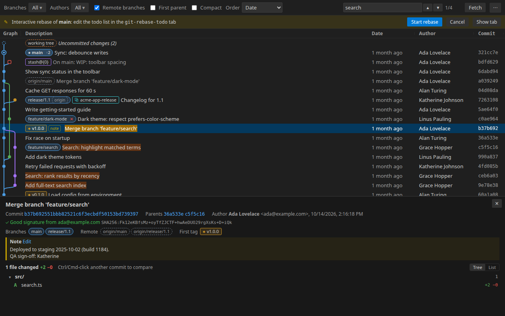

git rebase -i todo commands explained
When you run git rebase -i, git opens a file called git-rebase-todo: one line per commit, each starting with a command. This page explains every command git accepts in that file (pick, reword, edit, squash, fixup, exec, break, drop, label, reset, merge and update-ref), what happens when you delete or move lines, and a worked example. Everything here was checked with git 2.53.
All commands at a glance
Each command has a one-letter short form, which works the same way as the full word.
| Command | Short | What it does |
|---|---|---|
pick | p | Use the commit as it is. |
reword | r | Use the commit, but open its message for editing. |
edit | e | Use the commit, then stop so you can amend it or split it. |
squash | s | Combine with the commit above; edit the combined message. |
fixup | f | Combine with the commit above; keep only the message above. |
fixup -C | f -C | Combine; keep only this commit’s message. |
fixup -c | f -c | Like -C, but open the message for editing. |
exec <command> | x | Run a shell command; stop if it fails. |
break | b | Stop here; git rebase --continue goes on. |
drop | d | Leave the commit out. |
label <name> | l | Give the current position a name (rebasing merges). |
reset <name> | t | Go back to a labelled position (rebasing merges). |
merge | m | Recreate a merge commit (rebasing merges). |
update-ref <ref> | u | Move another branch to this point when the rebase ends. |
What the todo file looks like
Give git rebase -i the commit just below the oldest one you want to change. The todo lists the commits after it, oldest first (the reverse of git log). Recent git writes each line as pick Recent git writes each line as (older versions wrote it without the pick <hash> # <subject>; older versions left out the #.lt;hashRecent git writes each line as pick <hash> # <subject>; older versions left out the #.gt; # Recent git writes each line as pick <hash> # <subject>; older versions left out the #.lt;subjectRecent git writes each line as pick <hash> # <subject>; older versions left out the #.gt;#). Everything after the hash is only there to help you read it. This is the file git 2.53 wrote for git rebase -i HEAD~3:
pick 25fcb25 # B: add B
pick 0ce2e70 # C: add C
pick a98d568 # D: add D
# Rebase 4dd390c..a98d568 onto 4dd390c (3 commands)
#
# Commands:
# p, pick <commit> = use commit
# r, reword <commit> = use commit, but edit the commit message
# e, edit <commit> = use commit, but stop for amending
# s, squash <commit> = use commit, but meld into previous commit
# f, fixup [-C | -c] <commit> = like "squash" but keep only the previous
# commit's log message, unless -C is used, in which case
# keep only this commit's message; -c is same as -C but
# opens the editor
# x, exec <command> = run command (the rest of the line) using shell
# b, break = stop here (continue rebase later with 'git rebase --continue')
# d, drop <commit> = remove commit
# l, label <label> = label current HEAD with a name
# t, reset <label> = reset HEAD to a label
# m, merge [-C <commit> | -c <commit>] <label> [# <oneline>]
# ...
# u, update-ref <ref> = track a placeholder for the <ref> to be updated
# to this position in the new commits. The <ref> is
# updated at the end of the rebase
#
# These lines can be re-ordered; they are executed from top to bottom.
#
# If you remove a line here THAT COMMIT WILL BE LOST.
#
# However, if you remove everything, the rebase will be aborted.
The file lives at .git/rebase-merge/git-rebase-todo. Lines starting with # are ignored. Git runs the list from the top when your editor exits, and from then on the file holds only the steps still to do. If the rebase stops part-way, git rebase --edit-todo opens the remaining steps again.
pick, reword, edit
pick replays the commit unchanged. Commits above the first line you change keep their hashes; every commit after it gets a new hash, even if its line still says pick, because its parent changed.
reword replays the commit and opens its message in your editor (git saves it as .git/COMMIT_EDITMSG). Below the message git adds a block of # comment lines with the rebase status; those, and any other line starting with #, are dropped from the message. An empty message stops the rebase.
edit replays the commit and stops:
Stopped at 0ce2e70... C: add C
You can amend the commit now, with
git commit --amend
Once you are satisfied with your changes, run
git rebase --continue
Change files, git add them, git commit --amend, then git rebase --continue. To split the commit in two, run git reset HEAD~1 at the stop (the changes stay in your files), commit them in pieces, and continue.
squash and fixup (-C, -c)
Both fold a commit into the one on the line above it, so the first line of the list cannot be either; git stops with cannot 'squash' without a previous commit. They differ only in which message the combined commit gets:
| Line | Message of the combined commit | Editor opens? |
|---|---|---|
squash | Both messages, for you to edit together | Yes |
fixup | The message of the commit above; this one’s is thrown away | No |
fixup -C | This commit’s message; the one above is thrown away | No |
fixup -c | This commit’s message, for you to edit | Yes |
For a squash, git prepares the message like this, and you delete what you do not want:
# This is a combination of 2 commits. # This is the 1st commit message: B: add B # This is the commit message #2: C: add C
With fixup -c the first message is shown commented out (# The 1st commit message will be skipped:). Several squash or fixup lines in a row all fold into the same pick. git commit --fixup and --autosquash write these lines for you; see fixup and autosquash and squash commits.
exec, break, drop
exec runs the rest of the line in a shell at that point. If the command fails, the rebase stops:
Executing: test -f nope.txt
warning: execution failed: test -f nope.txt
You can fix the problem, and then run
git rebase --continue
git rebase -i --exec "npm test" main adds an exec npm test line after every commit, a cheap way to check that each commit builds and passes on its own. git rebase --continue after a failed exec moves on to the next line; it does not run the command again.
break takes no commit. It stops the rebase at that point so you can look around or run something; git rebase --continue resumes. drop leaves the commit out; deleting the line does the same unless you have configured otherwise (below). The drop guide covers when to drop and when to revert.
Whenever the rebase stops, for edit, break, a failed exec or a conflict, git status says where it is and git rebase --abort puts the branch back as it was. See rebase conflicts: continue, skip, abort.
label, reset, merge (--rebase-merges)
By default an interactive rebase flattens history: merge commits in the range are left out and the commits from both sides are replayed in a line. In this repository the range after C holds a merge of a branch with one commit, F:
git rebase -i HEAD~3 # default: merges are flattened pick a98d568 # D: add D pick 2ca3028 # F: add F pick 1efeba8 # G: add G git rebase -i --rebase-merges HEAD~3 # keep the merge label onto reset onto pick 2ca3028 # F: add F label feature reset onto pick a98d568 # D: add D merge -C 3e585aa feature # Merge branch 'feature' pick 1efeba8 # G: add G
label names the current position, reset jumps back to a named position, and merge creates a merge commit with the named position as its second parent. merge -C <commit> reuses that original merge commit’s message; -c opens it for editing. You can still change the pick lines in each part; leave the label, reset and merge lines alone unless you mean to change the shape of the history.
update-ref (--update-refs)
If you stack branches (part1 on top of main, your branch on top of part1), rebasing the top branch normally leaves part1 pointing at the old commits. With --update-refs, git adds an update-ref line for every other branch that points at a commit in the range, and moves those branches to the new commits when the rebase finishes:
git rebase -i --update-refs HEAD~3 pick 25fcb25 # B: add B pick 0ce2e70 # C: add C update-ref refs/heads/part1 pick a98d568 # D: add D update-ref refs/heads/save Successfully rebased and updated refs/heads/main. Updated the following refs with --update-refs: refs/heads/part1 refs/heads/save
Note that save, a branch pointing at the same commit as main, was moved too. Delete an update-ref line to leave that branch where it is. Branches checked out in another worktree are not updated. git config --global rebase.updateRefs true makes this the default.
Deleting lines, emptying the list, reordering
Deleting a line drops that commit, without a warning by default. To be warned instead, set rebase.missingCommitsCheck to warn, or to error to stop the rebase before anything happens:
git config --global rebase.missingCommitsCheck error Warning: some commits may have been dropped accidentally. Dropped commits (newer to older): - b497d64 # C: add C To avoid this message, use "drop" to explicitly remove a commit.
Deleting every line (comments may stay) cancels the rebase: git prints error: nothing to do and nothing changes. So does an editor that exits with an error. If you started with --autostash, your uncommitted changes are put back either way.
Moving a line changes the order of the commits; git works from the top down. Moving commits past each other can cause conflicts when they touch the same lines. The reorder guide has more.
A worked example
A login branch has five commits on top of main. We want one commit for the login form (with the typo fix folded in), one for password reset with a better message (with the WIP commit folded in), and no debug logging:
git log --oneline 6fbf5da WIP 8e209ae Add password reset 6665f7c Add debug logging 260a3fe Fix typo in login form 77eea1a Add login form 772f21f Initial commit git rebase -i main # before (as git wrote it) pick 77eea1a # Add login form pick 260a3fe # Fix typo in login form pick 6665f7c # Add debug logging pick 8e209ae # Add password reset pick 6fbf5da # WIP # after (as we saved it) pick 77eea1a # Add login form fixup 260a3fe # Fix typo in login form reword 8e209ae # Add password reset fixup 6fbf5da # WIP drop 6665f7c # Add debug logging
The reword line opens the message; we changed it to Add password reset page and added a body. The WIP commit was moved under it and marked fixup, so its changes join that commit and its message is dropped. The result:
git log --oneline 218b26d Add password reset page 0b0e5f7 Add login form 772f21f Initial commit
Right after a rebase, ORIG_HEAD points at the branch as it was, so git reset --keep ORIG_HEAD undoes the whole thing. Later, find the old position in git reflog; see the undo guide. If the branch was already pushed, update it with git push --force-with-lease, and do not rewrite branches others work on.
Edit the todo in a VS Code tab with Mergeline
Mergeline is a free, MIT-licensed git graph for VS Code. From version 0.21 it opens git’s real todo file in an editor tab, with no editor configuration needed:
- Start. In the graph, right-click the commit just below the oldest one you want to change, on the checked-out branch, and choose Interactive rebase of the commits after this…. Mergeline runs
git rebase -i --autostash <that commit>, so uncommitted changes are kept. If the range contains merge commits, it first asks whether to Keep merge commits (--rebase-merges, with thelabel/reset/mergelines above) or Flatten them. - Edit the
git-rebase-todotab. It is the file git wrote, with VS Code’s built-in highlighting for rebase todo files. Change commands, move lines (Alt+↑/↓, Option on macOS) or delete them, as described on this page. - Start or cancel. Press ✓ Start Rebase / Done in the tab’s title bar, or Start rebase in the bar above the graph, which reads “Interactive rebase of <branch>: edit the todo list in the git-rebase-todo tab” and has Show tab to bring it back. Closing the tab also hands the file back to git, as
code --waitdoes. ✕ Cancel Rebase (or Cancel in the bar) makes git abort: nothing changes and your uncommitted changes come back. - Messages. For each
reword,squashorfixup -cline, the commit message opens in another tab (COMMIT_EDITMSG) with Done and Abort rebase. Lines starting with#are left out of the message. - Stops. At an
editorbreakline, or on a conflict, the bar above the graph offers Continue, Skip and Abort. Continue opens any later reword or squash messages in tabs too. - Undo. When the rebase finishes, the notification offers Undo, which runs
git reset --keepback to where the branch was.

It works without the code command on your PATH, so also in VSCodium, Cursor, Windsurf and remote or WSL windows. To run git rebase -i in a terminal with your own git editor instead, set mergeline.interactiveRebase to terminal. For single edits, Mergeline’s right-click menu also has one-click actions that write the todo for you: edit a message, squash, drop, move and fixup. To use VS Code as the editor for git rebase -i in any terminal, see VS Code as your git editor; the overview is in interactive rebase in VS Code.
Mergeline is not on the VS Code Marketplace yet. Download the .vsix from GitHub and run Extensions: Install from VSIX… (full steps).